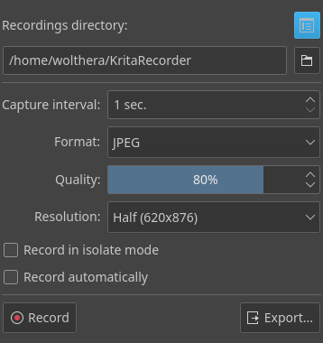

Recorder Docker¶
You may have seen artists show little progress movies of their work. This is called a time lapse! Normally a time lapse is recorded using outside software, like OBS, and then sped up around 16 times, and they are used to convey the whole amount of effort that went into an image. The recorder docker simplifies making a time lapse, by taking a snapshot every stroke and then letting you render it to a video file with ffmpeg. Because this docker relies on FFMpeg, it cannot be used on Android.
The recorder docker makes a snapshot of the canvas every few seconds, or at the end of every stroke. You can tell it's turned on because there will be a recording symbol in the status bar, which is red when it's making snapshots and white when it's on standby.
Because it stores the snapshots, that means you can take breaks, close the image, turn off the computer, come back a month later. However, snapshots can take up quite a bit of space, so if you are running out of space, don't forget to check the temporary folder!
At the end, you can turn the snapshots into a video file, ready for your favorite video sharing site.
備註
Some people also call time lapses 'speed paints', but these are not the same thing. A speed paint is when you try to draw an image in a far shorter time than is usual for you. For example, drawing a whole landscape in 15 to 30 minutes. People like to record their speed paints, and because both speed paints and time lapses are videos, people often confuse them.
Similarly, this tool should also not be confused with Macro Recording, which is when you tell the program to record all your actions into a file, and have it play those back at a later date. Krita currently does not have this functionality.
Docker Options¶
- Recordings Directory:
The directory where the snapshots are kept. Note the Manage Recordings button, which will assist you in selecting old recordings to remove.
- Capture Interval:
The minimum capture interval. The recorder docker takes a picture when the image changes, but will wait for this capture interval to pass before making a new snap shot. This means quick strokes will not each require a new snapshot. Increase this if you want less snapshots to be recorded during a painting session, or if you are experiencing slowdowns.
- Format:
The file format to use for the snap shots. *.jpg is faster, but *.png is better for very sharp images.
- Quality:
Control the quality of the JPEG snapshots. The lower the quality, the lower the file size, but too low and you will get a messy looking recording.
- Compression:
Control the compression of the PNG snapshots. Greater value will produce smaller files, but will take more processing power. This is recommended to be set to be between 1 and 3 for a good balance between speed and file size.
- Resolution:
Lower the resolution of the snapshot. This can drastically reduce size without losing too much quality.
- Record in Isolate Mode.
Record when layer isolate mode is on. As isolate mode hides all the other layers, it can result in a lot of flickering during the resulting time lapse. Only turn this on when you are not in the habit of switching layers often when in isolate mode.
- Record automatically
Start recording the instant an image is created or loaded. This option is useful for those who want to record each of their drawings.
Finally, there's Record and Export. The former starts and stops recording. The latter lets you render the current drawing's timelapse.
The recordings manager window. This is a list of recordings you have, and how much space they take. You can select recordings to delete them.¶
Export Options¶
Compare these options with the one on the 繪製動畫 page, as they do largely the same things.
- Recording info:
Shows what kind of frames and how many frames are taken into account when creating the final video file. Pressing Open Record Directory will allow you to open the folder where the recordings are located in your file browser.
- Input FPS:
How many frames per second should go in. For example, to make your time lapse twice faster, this value should be double that of the Video fps.
- Video FPS:
The actual FPS of the video.
- Resize:
Scale the final video.
- FFMpeg:
The location of the ffmpeg executable.
- Render As:
Select the render setting to use. MP4 x264 is sufficient for most drawings and will be accepted on most video sharing sites.
- Video Location:
Where to put the resulting video.
- Video Duration:
The final video length in seconds. This will change as you change the FPS settings.
After Export¶
- Watch it:
This will open the resulting file in the default video player on your system.
- Show in folder:
This will open the folder where the file is located in your file browser.
- Remove recordings:
Remove the snapshots from your computer.